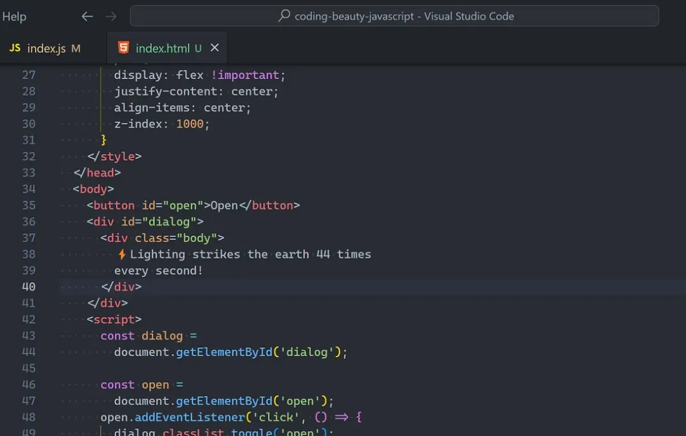
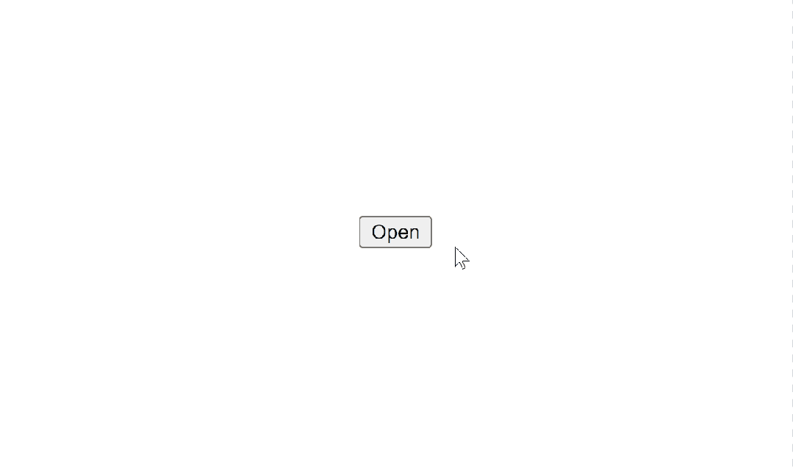
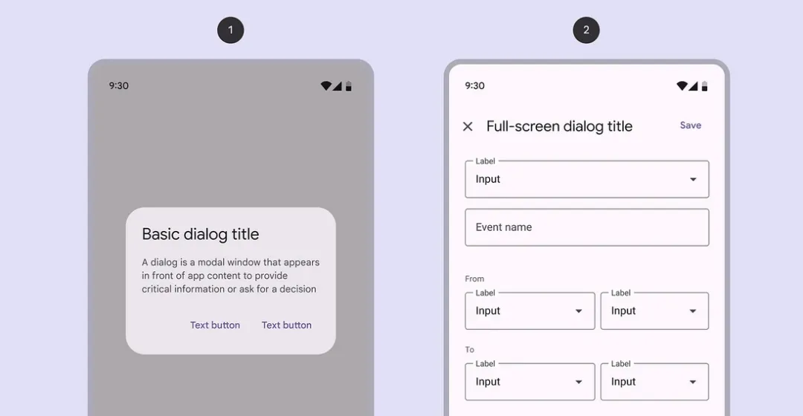

dialog 标签：绝对改变游戏规则
2024-07-18 13:31:05 · YinHao
有了新的 <dialog> 标记，前端开发将从此不同...
❌ 之前：
看看我创建一个对话框要花费多少功夫 👇。仅 CSS 就有近 20 行：
这还只是用于对话框功能的 CSS，它看起来仍然非常基本：
但是，使用新的 <dialog> 标签又如何呢？
✅ 现在：
<button id="open">Open</button>
<dialog id="dialog">
⚡ Lighting strikes the earth 44 times every second! ⚡ 闪电每秒击中地球44次！
</dialog>
JS:
const dialog = document.getElementById("dialog");
const open = document.getElementById("open");
open.addEventListener("click", () => {
dialog.showModal();
});
我们甚至可以使用 show() 方法来显示非模式对话框--没有背景，干扰较少：
const dialog = document.getElementById("dialog");
const open = document.getElementById("open");
open.addEventListener("click", () => {
// ✅ show() 方法
dialog.show();
});
对话框一直是强力吸引用户注意力并向其传递信息的有力方式。
从 Material Design 到 Fluent Design，它一直是每个用户界面设计系统的主打功能。
但是，即使它们再常见，我们也不得不借助第三方库或创建自定义组件来使用它们。
其中许多图书馆甚至没有遵循关于可用性和可访问性的官方建议......
例如：按 Escape 键应该可以解除页面上的对话框，但许多自定义对话框都不会这样做。
因此， <dialog> 改变了这一切。
自动打开对话框
open 属性使对话框从打开页面的那一刻起就一直处于打开状态：
<dialog id="dialog" open>
长颈鹿比人类更有可能被闪电击中。事实上，它们的可能性是人类的30倍。
</dialog>
自动关闭按钮
是的，可以使用标准事件侦听器和 close() 方法添加关闭功能：
const close = document.querySelector("#dialog .close");
close.addEventListener("click", () => {
dialog.close();
});
但是内置的 <dialog> 可以让这一切变得更加简单--无需 JavaScript：
<dialog id="dialog">
⚡ 在 codingbeautydev.com 获取基本的编码技能和知识
<br />
<form method="dialog">
<button class="close">关闭</button>
</form>
</dialog>
如何正确设计 <dialog> 样式
<dialog> 有一个特殊的 ::backdrop 伪元素，用于设计背景墙的样式：
::backdrop {
background-image: linear-gradient(
45deg,
magenta,
rebeccapurple,
dodgerblue,
green
);
opacity: 0.75;
}

主要元素的样式简单明了：
dialog {
background-color: black;
color: white;
}